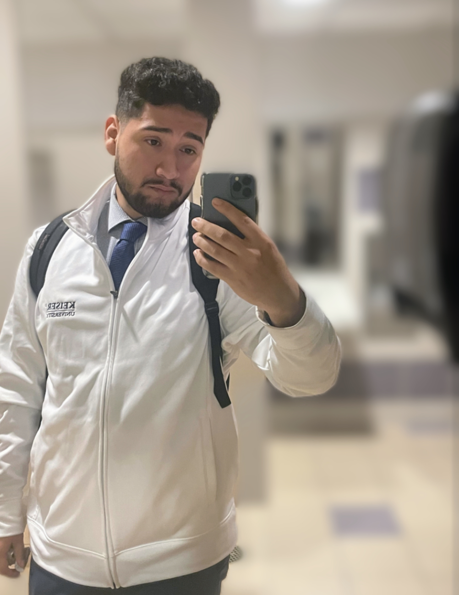

Welcome To My Portfolio
About me
My name is Jesse Quijada and I am a student at Keiser university pursuing for bachelors of science in software engineering. I am from Plant City, Florida and lived there my entire life. I began my education at Keiser in 2021 and will graduating in early 2024. I chose software engineering because I enjoy the presence of having technology and how advance it gets throughout the years. I also like to construct projects and see it come together until it becomes to final product. Therefore, having the two things I enjoy is what made me chose this career path. I first started coding in highschool creating web pages and then became drawn into it. I had then went into college pursuing into the medical field at first and then changed into computer science because this is where my interest was. I am now to the point where I am creating projects to help my resume stand out more for employment. I am creating this portfolio to demonstrate my projects and experience that I have throughout my journey.

Experience
I first started coding when I was highschool, I started with some HTML. I was creating basic webpages with no CSS at the time. I had then came into Keiser university for software engineering. My first language was java, I learned java to a good understanding and created some projects such as TicTacToe, grocery shopping, fast food ordering, and much more. I had then learned a bit of C# and swift. I was able to develop a TicTacToe and a measurement conversion in swift and link it to my Iphone. I am currently now in a internship as a game developer. I use the game engine "Unity" and code in C#. I am also now learning web development which contains HTML, CSS, and JavaScript. Some other experience and knowledge I have is mySQL, node.js, and the understanding of the OSI model.